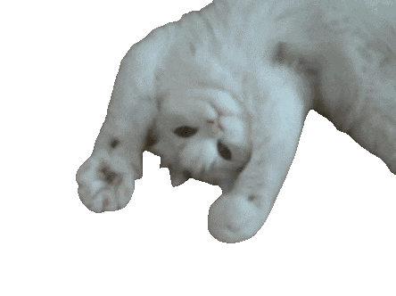
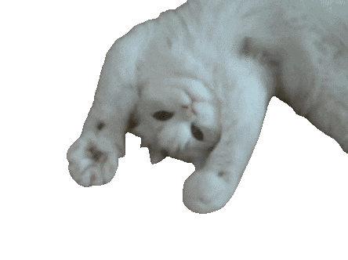
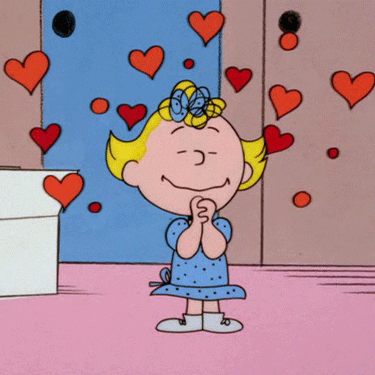
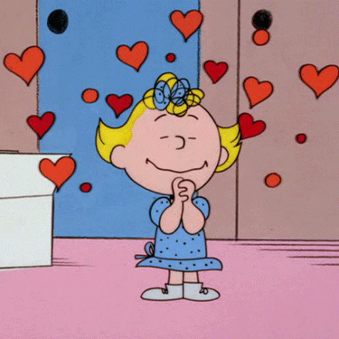

 

Who is Bruce Willis?
Bruce Willis is an icon, a legend, and a true inspiration to many. With his charismatic presence and undeniable talent, Bruce has captured the hearts of millions around the world.
Why do we love Bruce Willis?
-
Unforgettable Roles
From the fearless John McClane in the "Die Hard" series to the thoughtful David Dunn in "Unbreakable", Bruce's roles are legendary. He has the unique ability to make us laugh, cry, and sit on the edge of our seats, all in one movie.
-
Versatility
Bruce is not just an action hero. He's showcased his acting prowess in drama, comedy, and even voice acting. His versatility is a testament to his dedication and passion for the craft.
-
Charming Personality
Off the screen, Bruce is known for his wit, charm, and down-to-earth nature. He's not just a star; he's a real person who values his fans and never forgets his roots.
-
Timeless Appeal
Decades in the industry, and Bruce still manages to captivate audiences young and old. His timeless appeal is a testament to his hard work and commitment.
Subscribe to our newsletter
Enter your e-mail to get content about Bruce Willis every f*cking day!!!!
Fan corner
Here will be my favorite Bruce Willis moments, quotes, or memories. Let's celebrate the man, the myth, the legend - Bruce Willis!
Did you know?
- Bruce was born in Germany and moved to the U.S. with his family when he was two years old.
- Before his big break in Hollywood, Bruce worked as a private investigator.
- He's not just an actor; Bruce is also a talented singer and released an album in the 1980s.